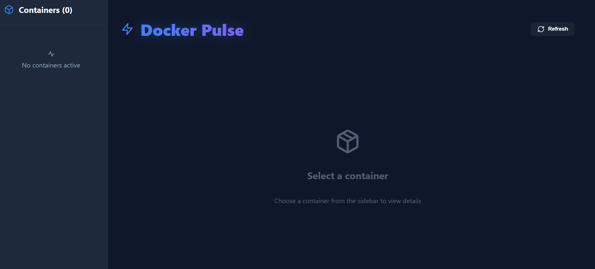
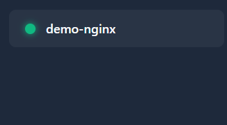
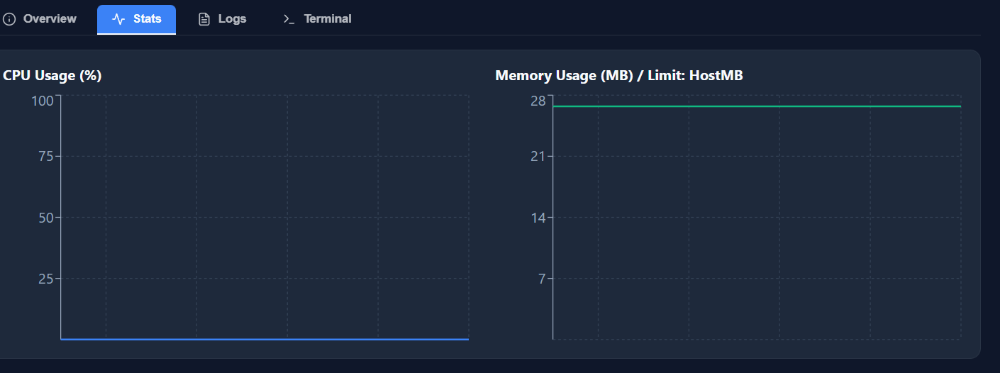

Parte 2 Historial de Prompts
Evolución paso a paso del proyecto, desde la definición del MVP hasta la refactorización de la UI.
Prompt 1: Definición Inicial
Establecimiento de la idea general y requisitos para aplanar el terreno para los futuros contenidos
Quiero hacer una aplicacion que compruebe contenedores dockers que tengo. Tiene que comprobar los datos de este docker, como su nombre y otras caracteristicas que lo componen. Se mostraran a la izquierda como un navegador y solo se mostraran los datos mas avanzados uan vez le hagass click
Resultado Prompt 1:

Prompt 2: Implementación Técnica
Definición de arquitectura Cliente-Servidor y uso de librería Dockerode.
Procede con la creación de estructura server y client, instalación de dockerode, socket.io y xterm
Resultado Prompt 2:

Prompt 3: Creación de funcionalidades de datos avanzados
Crear las funciones como mostrar logs, los datos y la terminal integrada
"Integra la capacidad de mostrar los recursos que tiene el contenedor, permitiendo encenderlo y apagarlo desde la aplicación, ademas añade un registro de los logs del contenedor y una terminal para ejecutar comandos directamente en este"
Resultado Prompt 3:

Prompt 4: Lanzamiento y comprobaciones
Solución de errores del backend y comprobaciones para el correcto lanzamiento de la aplicación
"Comprueba los errores de lanzamiento al abrir le backend y comprueba que no se vean errores graficos por algun error a la hora de ejecutar las librerias de Vite"
Resultado Prompt 4: